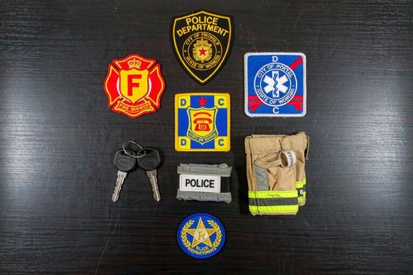
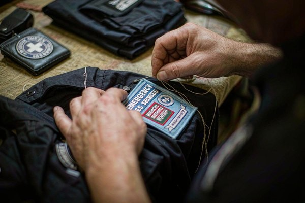

Police, Fire & EMS Patches: Public Service Identity
No uniform carries more meaning per square inch than a first responder's. A police, fire or EMS patch tells the public who is in charge at a scene, tells the wearer which family of professionals they belong to, and — decades later — tells a retirement shadowbox what a career stood for. This guide covers the design conventions the three services share, where they differ, placement standards, attachment choices for duty gear, and how to order for a department that rotates people and gear constantly.

Why Public Service Patches Carry More Weight
Corporate patches identify a brand. First responder patches identify authority. At a road collision or a structure fire, the shoulder mark is often the fastest way for a member of the public to work out who runs the scene, and for responding crews to spot who is mutual aid from a neighboring jurisdiction. That functional burden explains why police, fire and EMS insignia look the way they do: bold shields, crests and symbols readable at distance, high contrast that survives flash photography and night operations, and construction tough enough for gear that gets dragged, snagged and laundered hard.
There is a ceremonial layer too. Class A dress uniforms carry full-color patches worn with pride at graduations, promotions and funerals; duty and tactical wear uses the same designs in subdued colors, exactly the dual-version doctrine the military pioneered and which we covered in our military patches guide. Most departments eventually own both versions of the same crest, digitized once.
What Each Service Needs From Its Patch
The three services share construction standards but diverge in symbolism and hierarchy:
- Police and law enforcement. Shield-shaped shoulder patches carrying the agency name, state or city seal elements and sometimes a motto. Rank shows elsewhere on the uniform (collar brass, chevrons), keeping the shoulder patch purely about agency identity — which is why neighboring agencies can look so similar and still be instantly distinguishable.
- Fire service. Round or shield crests dominated by the department name, a maltese cross or a logo, often with station numbers and engine company designations. Fire departments run the widest patch families — one design per station or company is common — which makes disciplined file management the difference between a tidy program and a mess.
- EMS and paramedics. The Star of Life anchors most EMS marks, usually with service name and unit numbers. Because EMS staff often rotate between employer hospitals, private services and volunteer squads, removable hook-and-loop attachments are far more common here than in the other two services.
- Dispatch and support roles. Communications, chaplaincy and administrative staff wear variant marks — often the same crest with a distinct border color — so the public and crews can tell operational staff from support at a glance.
Design Rules That Survive Duty Wear
Public service patches get photographed, filmed and scrutinized more than any other category. The design conventions that hold up:
- Two to four inches, shoulder standard. Shoulder patches run 3 to 4 inches for visibility; cap and chest marks run smaller. The spacing formulas by garment are the same ones in our placement guide.
- High contrast, limited palette. Gold on navy, white on black, red and gold on dark blue — combinations that stay legible in bodycam footage and low light. Fine gradients die in embroidery; bold flat color is the tradition for a reason.
- Text sized for distance. Agency names around the border need letters at least 4 mm tall; the legibility math is covered in our text legibility guide. Long agency names wrap around the crest rim rather than compressing.
- Symbols over words. A maltese cross, star of life or shield silhouette reads instantly from across a street; a paragraph of text never does. The best service crests carry one symbol and the agency name, nothing more.
- Plan the family. Full color for dress, subdued for duty, hook-and-loop for tactical vests, a cap-size version — decide the set before ordering the first run, so every variant builds from one master file.

Placement Standards Across the Uniform
Public service uniforms follow conventions close to the military's, with local variation by agency policy:
| Garment | Standard Position | Typical Size |
|---|---|---|
| Duty shirt / Class A | Both shoulders (agency policy sets left, right or both) | 3–4 in |
| Outerwear / rain gear | Both shoulders, matching the shirt | 3–4 in |
| Tactical vest / plate carrier | Hook-and-loop panels front and rear | 2.5–3.5 in |
| Cover / cap | Centered front panel or side | 1.5–2.5 in |
| Name bar / plate | Right chest, opposite badge | 1–1.5 in |
The one rule that matters more than any single position: identical placement across every member. A department where the same patch sits at three different heights reads as disorganized precisely where it can least afford to. The discipline behind that consistency is the same one that governs every corporate uniform program.
Attachment for Duty Gear
Duty environments are harder on patches than any office, and each attachment option earns its place differently:
| Backing | Duty Fit |
|---|---|
| Sew-on | The standard for duty shirts and dress uniforms — survives repeated industrial laundering |
| Hook-and-loop | Vests, plate carriers and jackets where marks swap between roles or get removed for photos |
| Iron-on | Acceptable for lighter duty wear with stitch reinforcement; not for hot-wash programs |
| PVC material | Wet scenes, marine units and wildland gear where embroidery soaks and stiffens — PVC shrugs water off |
The trade-offs between these options are laid out in detail in our backing types guide. For most agencies the practical split is sew-on for shirts, hook-and-loop for vest carriers, and that is the specification worth writing into the department's uniform policy.

Ordering for a Rotating Roster
Departments hire, promote and retire people continuously, and gear moves between members. Three habits keep the patch program cheap and consistent:
- Order the crest deep, variants shallow. The main shoulder patch is identical across the roster — stock it in bulk. Subdued versions, cap marks and role variants (dispatch, chaplain, honor guard) order against actual need.
- Keep one master file. Every variant digitizes from the same crest file, so adding a subdued version or a vest-size patch never restarts artwork or setup costs.
- Replace per incident, not per cycle. Because there is no minimum order, a torn uniform or a new hire ships a single patch economically — no waiting for the department's next bulk cycle.
Commemorative orders deserve their own note: retirement patches, memorial crests and anniversary badges follow the same conventions as unit reunion marks, and collectors and retiring officers often want a spare set sewn for a shadowbox — order those alongside the working set, not after.
Frequently Asked Questions (FAQ)
Q1: What size is a standard police or fire shoulder patch?
3 to 4 inches tall for shirt and outerwear shoulders, with cap marks at 1.5 to 2.5 inches and vest patches at 2.5 to 3.5 inches. Match the existing patches on current uniforms if the department is reordering — consistency matters more than the exact number.
Q2: Can a patch design include our city seal or state emblem?
Government seals and emblems usually have usage rules set by the issuing authority, so confirm the department's authority to reproduce them before ordering. We redraw supplied artwork as-is and do not verify authorization — that sign-off stays with the agency ordering the patches.
Q3: How do subdued patches work for duty wear?
A subdued version translates the same crest into olive, black and gray tones for tactical and low-visibility use. Both versions digitize from one master file, so ordering the pair costs little more than one run. This is standard practice borrowed directly from military insignia programs.
Q4: Which backing should a fire department choose?
Sew-on for duty shirts and dress uniforms — it survives repeated industrial washing. Hook-and-loop for vest carriers and jackets where marks swap between gear. For marine and wildland units exposed to soaking, PVC patches resist water far better than thread embroidery.
Q5: Can we order patches for just a few new hires?
Yes — there is no minimum order, so a replacement for one torn uniform or a single new hire ships economically. Keep the department's master digitized file on record and every later reorder matches exactly.
Conclusion: A Patch That Has to Work for a Living
Public service patches do real work — identification under pressure, hierarchy at a glance, pride in a profession that earns it. Design bold enough to read at distance, place it identically on every member, back it for the laundering and gear it will actually meet, and keep one master file serving every variant from dress to duty. Do that, and the crest on the shoulder does its job for every shift and every ceremony, and long after.
Send us your department crest or a photo of your current patch, and we will redraw it vector-clean, produce full-color and subdued proofs within 12 hours, and quote any quantity from a single replacement to a full roster. Request a free quote and get the mark on every shoulder it belongs on.